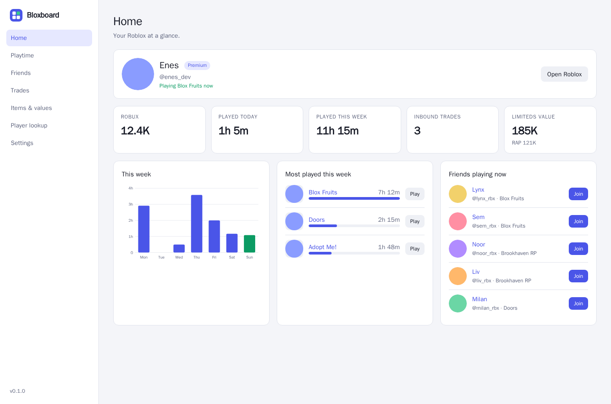
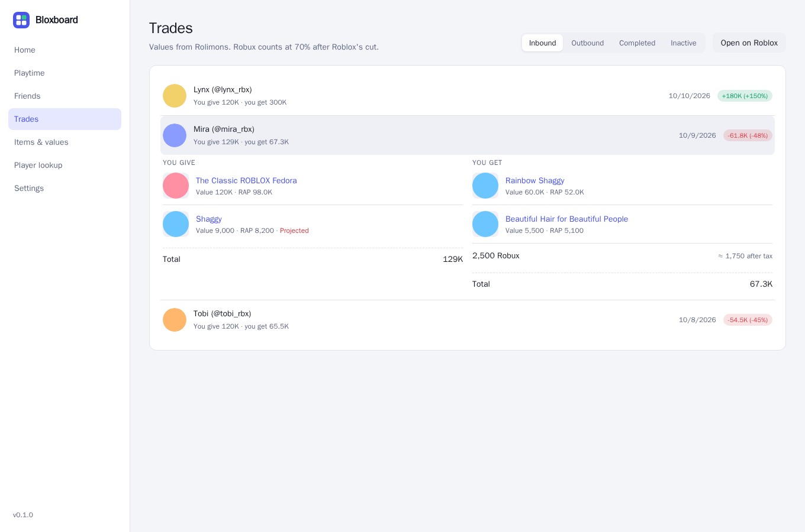
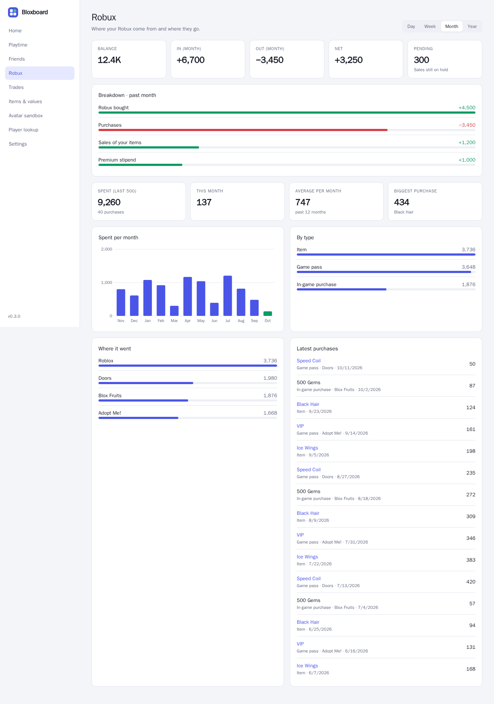
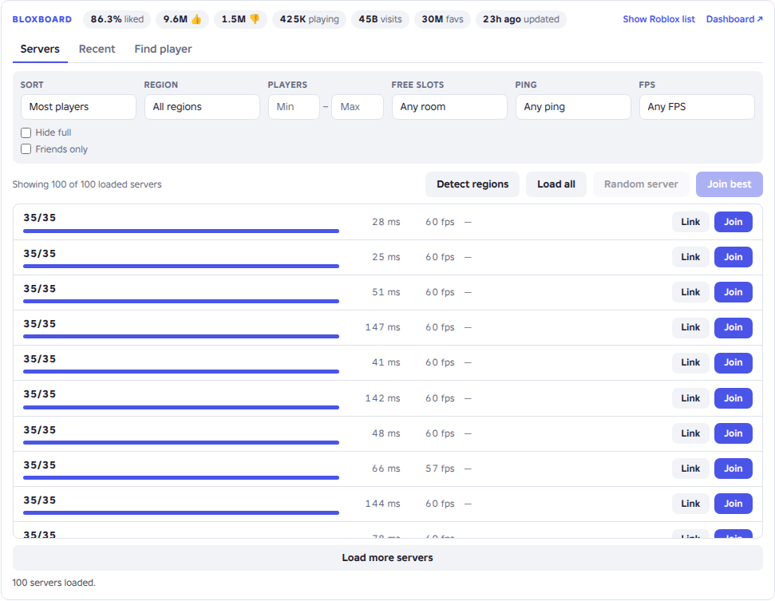

Server browser
Replaces Roblox's list. Filter by region, players, free slots, ping, FPS and friends. Join best, random server, invite links.
Server regions, a player finder, playtime stats, trade values and a full dashboard. No subscriptions, no tiers.

Bloxboard isn't on the Chrome Web Store, so it installs in developer mode. It takes about a minute.
helium://extensions and turn on Developer mode (top right).bloxboard folder.On roblox.com it adds one tidy panel to game pages and one thin bar to profiles. Everything else lives in its own dashboard tab.
Replaces Roblox's list. Filter by region, players, free slots, ping, FPS and friends. Join best, random server, invite links.
Every server you played in, with how long you were there and a Rejoin button.
Finds friends instantly through their online status. For anyone else it scans servers for their avatar, pass after pass.
Live like and dislike counters, players, visits, favorites, last update and your own playtime.
A row on the Roblox home page with the games you play most and your time in each.
Value, RAP, demand, trend and projected warnings on every limited.
Limiteds value and RAP, mutual friends, last online, join date, and a Join button when they're in a game.
Tracks what you play every minute and charts it per day and per game, for up to 90 days.
Every inbound, outbound and completed trade with Rolimons values, win or loss, and projected-item warnings.
Who's online, what they're playing, and a Join button for each.
Search every limited's value, see your own inventory worth, and look up any player.
Instant games with a Play button, limiteds with values and players, right under Roblox's search box.
Live totals for both sides, win or loss, and a warning before you send or accept a lowball or a projected item.
Where your Robux come from and go: per month, per game, per type, with your latest purchases.
Try any item on your avatar without buying it, see the total cost, and save outfits.
New trades arrive with the values worked out, plus Decline and Open buttons.
The dashboard follows your system's light or dark mode. The screenshots use sample data.



Roblox limits what any finder can see. Since February 2025, Roblox shows only about 5 random players per server. Friends and players who allow joins are found instantly. Anyone else may take several passes, or may not be found at all.